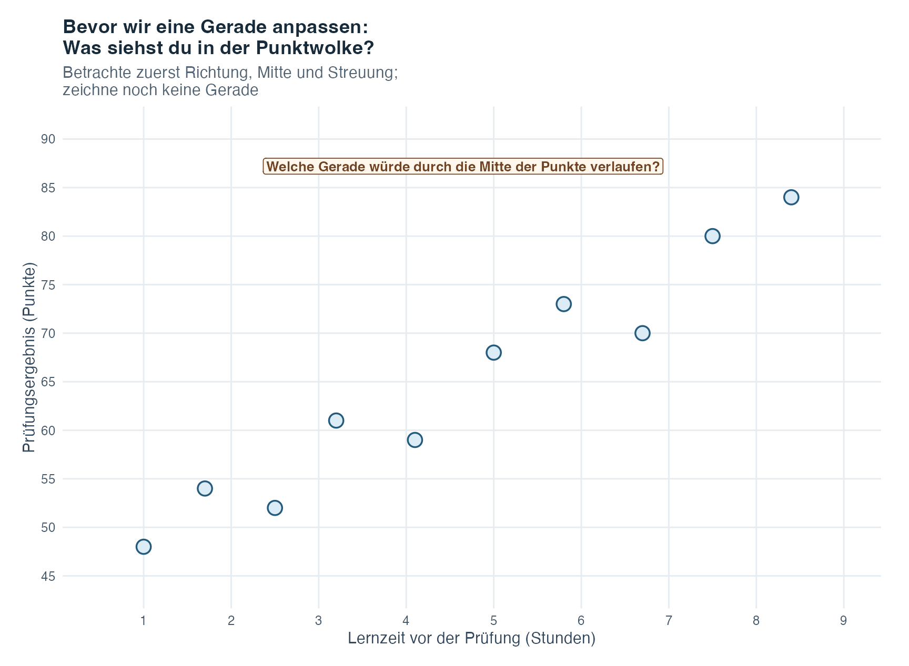
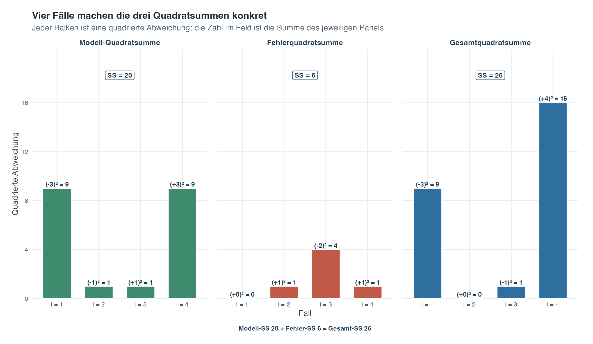
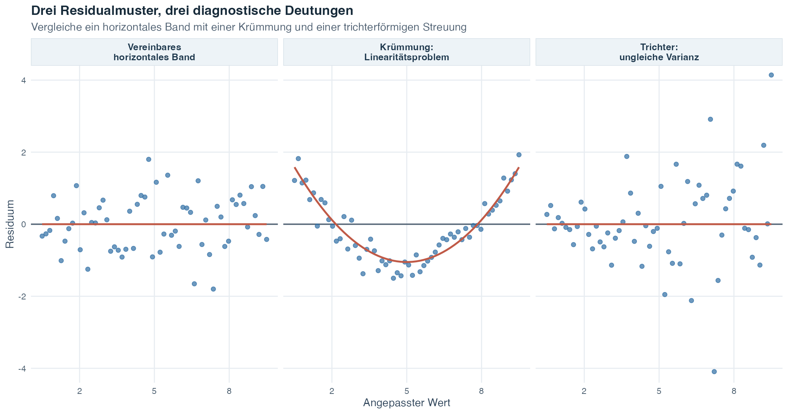

Übungsblatt
Wähle PDF zum Drucken oder Word zum Bearbeiten.
Einführung in die Statistik · Thema 5
Thema 4 hat uns gezeigt, wie wir ein Streudiagramm lesen und mit einer Korrelation die Richtung und Stärke einer linearen Beziehung zusammenfassen. Die Korrelation behandelt beide Variablen symmetrisch. Die einfache lineare Regression geht den nächsten Schritt und gibt ihnen unterschiedliche Rollen: Eine Variable wird zum Prädiktor, die andere zur Zielvariable, deren angepassten Mittelwert wir beschreiben möchten.
Betrachte die wöchentliche Zeit für angeleitete Übungen und einen Punktwert im statistischen Denken. Das Streudiagramm kann ansteigen, doch eine Forscherin oder ein Forscher möchte oft mehr wissen als nur, ob der Zusammenhang positiv ist. Welchen mittleren Punktwert passt die Gerade für eine gewählte Übungszeit an? Um wie viel liegt der angepasste Mittelwert höher, wenn sich die Übungszeit um eine Stunde unterscheidet? Und weshalb können zwei Studierende mit derselben Übungszeit dennoch unterschiedliche beobachtete Punktwerte haben? Die Regression macht aus der Punktwolke eine Gerade, damit wir solche Fragen in den ursprünglichen Masseinheiten der Variablen beantworten können.
Die Gerade hilft uns auch, aus dem zu lernen, was sie nicht trifft. Jede Beobachtung hat einen vertikalen Abstand von der Geraden, das sogenannte Residuum. Wenn wir die Gerade und die Residuen gemeinsam betrachten, trennen wir das vom Modell dargestellte Muster von der verbleibenden Variation. Das bereitet die späteren Themen vor, in denen mehrere Prädiktoren und Gruppenstrukturen in denselben allgemeinen Modellrahmen aufgenommen werden.
Eine angepasste Gerade bleibt ein vereinfachtes Modell. Sie verläuft nicht durch jede Beobachtung, ist kein Versprechen für ein einzelnes Ergebnis und zeigt für sich allein nicht, dass eine Veränderung des Prädiktors eine Veränderung der Zielvariable verursachen würde.
Leitfrage: Wie wird aus einer Wolke gepaarter Beobachtungen eine angepasste Gerade, und was sagen uns die Abstände von dieser Geraden?
Die einfache lineare Regression fasst die durchschnittliche lineare Beziehung zwischen einem quantitativen Prädiktor und einer quantitativen Ergebnisvariablen zusammen. Die Gerade beschreibt das vom Modell erfasste Muster, während die Residuen die verbleibenden Unterschiede zwischen den Fällen sichtbar halten.
Nach Abschluss dieses Themas solltest du:
Ein Prädiktor ist die quantitative Variable, mit der Unterschiede in einer anderen Variablen beschrieben oder vorhergesagt werden. Wir schreiben ihn als \(X\). Eine Ergebnisvariable ist die quantitative Variable, die beschrieben oder vorhergesagt wird, und wird als \(Y\) geschrieben. Das Wort einfach bedeutet, dass das Modell einen Prädiktor enthält. Es bedeutet weder, dass die wissenschaftliche Frage unwichtig ist, noch dass alle relevanten Einflüsse erfasst wurden.
Ältere Texte nennen \(X\) auch unabhängige Variable und \(Y\) abhängige Variable. Diese Bezeichnungen können in einer Beobachtungsstudie irreführen, weil sie kausal klingen können. Prädiktor und Ergebnisvariable beschreiben die Rollen der Variablen im Modell, ohne eine Kausalaussage zu machen.
Für einen gewählten Prädiktorwert \(x\) beschreibt das Modell den bedingten Mittelwert \(E(Y\mid X=x)\): den durchschnittlichen Ergebniswert in der Grundgesamtheit für Fälle mit diesem Prädiktorwert. Der vertikale Strich wird als “gegeben” gelesen. Ein geradliniges Modell für die Grundgesamtheit lautet
\[ E(Y\mid X=x)=\beta_0+\beta_1x. \]
Gleichwertig kann ein einzelner Ergebniswert so geschrieben werden:
\[ Y_i=\beta_0+\beta_1X_i+\varepsilon_i. \]
Dabei gilt:
Ein Parameter ist eine feste, aber meist unbekannte Grösse der Grundgesamtheit. Daher sind \(\beta_0\) und \(\beta_1\) Parameter. Die Gerade der Grundgesamtheit ist unbekannt, weil wir normalerweise nur eine Stichprobe beobachten.
Mit Stichprobendaten schätzen wir die Gerade als
\[ \widehat{Y}_i=\widehat{\beta}_0+\widehat{\beta}_1X_i. \]
Der Zirkumflex kennzeichnet eine Schätzung. Der Wert \(\widehat{Y}_i\), gelesen als “Y-Dach”, ist der angepasste Wert: der Ergebniswert, der für Fall \(i\) auf der geschätzten Geraden liegt.
Die Gerade beschreibt den geschätzten mittleren Ergebniswert bei jedem Prädiktorwert. Sie behauptet nicht, dass jede Person mit demselben Prädiktorwert dasselbe Ergebnis haben wird.
Der Achsenabschnitt \(\widehat{\beta}_0\) ist der angepasste mittlere Ergebniswert bei \(X=0\). Seine Einheit ist die Einheit der Ergebnisvariablen. Der Achsenabschnitt kann inhaltlich nützlich sein, wenn null möglich und sinnvoll ist. Liegt null weit ausserhalb des beobachteten Prädiktorbereichs, wird der Achsenabschnitt weiterhin benötigt, um die Gerade zu positionieren, besitzt aber möglicherweise keine sinnvolle Interpretation in der Wirklichkeit.
Die Steigung \(\widehat{\beta}_1\) ist die angepasste Differenz des mittleren Ergebnisses, die mit einem Unterschied des Prädiktors um eine Einheit verbunden ist. Ihre Einheit lautet Ergebniseinheiten pro Prädiktoreinheit.
Nehmen wir an, eine angepasste Gleichung lautet
\[ \widehat{\text{Punktzahl}}=42+2.1\times\text{Stunden}. \]
Der Achsenabschnitt besagt, dass die angepasste mittlere Punktzahl bei null Stunden 42 beträgt. Die Steigung besagt, dass sich Studierende, deren wöchentliche Übungszeit sich um eine Stunde unterscheidet, durchschnittlich um 2.1 angepasste Punkte unterscheiden. Bei Beobachtungsdaten sind Formulierungen wie “hängt zusammen mit” oder “unterscheidet sich um” angemessen. Die Aussage, eine zusätzliche Stunde verursache 2.1 zusätzliche Punkte, würde ein Design erfordern, das diesen Schluss stützt.
Das Vorzeichen der Steigung gibt die Richtung an. Eine positive Steigung steigt von links nach rechts, eine negative fällt, und eine Steigung von null ist horizontal.
Stell dir vor, mehrere Studierende hätten unterschiedlich lange für dieselbe Prüfung gelernt. Jeder Punkt unten steht für eine Person: Die Lernzeit liegt auf der horizontalen Achse, das erzielte Prüfungsergebnis auf der vertikalen Achse. Vorerst ist bewusst keine Gerade eingezeichnet. Lies zuerst die Punkte selbst.

Gehe das Bild in vier kleinen Schritten durch:
Damit erhält die Anpassungsregel einen intuitiven Zweck. Wir suchen jene Gerade, welche die Gesamtheit der quadrierten vertikalen Abweichungen möglichst klein hält. Sie erfasst die Mitte der Punktwolke und nicht jeden einzelnen Punkt. Der nächste Abschnitt benennt den angepassten Wert und das Residuum für einen Fall. Die Anatomieabbildung zeigt danach genau, wie Achsenabschnitt und Steigung diese Gerade positionieren.
Sobald die beiden geschätzten Koeffizienten bekannt sind, ergibt das Einsetzen des Prädiktorwerts eines Falls seinen angepassten Wert. Der beobachtete Ergebniswert liegt normalerweise nicht genau auf der Geraden. Seine vertikale Differenz zum angepassten Wert ist das Residuum:
\[ e_i=Y_i-\widehat{Y}_i. \]
Dabei gilt:
Ein positives Residuum bedeutet, dass das beobachtete Ergebnis über der Geraden liegt. Ein negatives Residuum bedeutet, dass es unter der Geraden liegt. Eine Umstellung der Gleichung zeigt die Beobachtung als zwei Bestandteile:
\[ Y_i=\widehat{Y}_i+e_i. \]
Ein Fehlerterm \(\varepsilon_i\) der Grundgesamtheit ist nicht beobachtbar, weil die wahre Gerade der Grundgesamtheit unbekannt ist. Ein Residuum \(e_i\) wird nach der Anpassung einer Stichprobengeraden berechnet und dient als Schätzung dieses Fehlers. Die beiden Ideen hängen zusammen, sind aber nicht gleich.
Residuen können gewöhnliche individuelle Streuung, Messfehler in der Ergebnisvariablen, ausgelassene Prädiktoren oder eine Modellform widerspiegeln, die nicht zur Beziehung passt. Das Residuum allein sagt uns nicht, welche Erklärung verantwortlich ist.
Die nächste Abbildung trennt zwei Aufgaben, die in einer einzigen Darstellung leicht unübersichtlich werden. Das erste Feld erklärt, wie Achsenabschnitt und Steigung die angepasste Gerade positionieren. Das zweite hält einen Prädiktorwert fest und zeigt, wie sich ein beobachteter Zielwert in seinen angepassten Wert und sein Residuum zerlegen lässt.
![Zwei übereinander angeordnete Felder beschriften eine einfache Regressionsgerade. Das erste zeigt die angepasste Gleichung, den Achsenabschnitt bei null, eine horizontale Veränderung um eine Einheit, den zugehörigen Anstieg der Steigung, die Definition Anstieg geteilt durch Schrittweite und den Punkt der Stichprobenmittelwerte auf der Geraden. Das zweite markiert einen Prädiktorwert, den zugehörigen angepassten und beobachteten Zielwert sowie das positive Residuum als beobachtet minus angepasst. Ein Hinweis erinnert daran, dass Punkte unterhalb der Geraden negative Residuen haben.](t05_simple-regression_files/figure-html/fig-regression-anatomy-1.png)
In Feld A benennen beide Achsen die Rolle der Variablen und erinnern daran, dass der Koeffizient die ursprünglichen Masseinheiten verwendet. Der Punkt \((0,b_0)\) markiert den Achsenabschnitt. Der grüne horizontale Schritt verändert \(X\) um genau eine Einheit. Der grüne vertikale Schritt ist die zugehörige Veränderung des angepassten Zielwerts, also \(b_1\). Wenn wir diesen Anstieg durch die Schrittweite von einer Einheit teilen, erhalten wir die Steigung. Der markierte Punkt \((\bar X,\bar Y)\) zeigt eine weitere Eigenschaft dieser angepassten Stichprobengeraden: Wenn das Modell einen Achsenabschnitt enthält, verläuft die Gerade durch die beiden Stichprobenmittelwerte. Der nächste Abschnitt erklärt die Anpassungsregel, die diese Gerade erzeugt.
Feld B verfolgt einen Fall \(i\). Die gestrichelte Führungslinie beginnt bei seinem Prädiktorwert \(X_i=4.4\) und erreicht den angepassten Punkt \((X_i,\widehat Y_i)\) auf der Geraden. Der beobachtete Punkt \((X_i,Y_i)\) liegt darüber. Der orangefarbene Abstand beträgt daher \(e_i=Y_i-\widehat Y_i=+1.45\). Ein Fall unterhalb der Geraden hätte \(Y_i<\widehat Y_i\) und ein negatives Residuum. Die Identität \(Y_i=\widehat Y_i+e_i\) besagt, dass der angepasste Teil und das Residuum gemeinsam den beobachteten Zielwert ergeben.
Die Abbildung bezeichnet die vollständige Anatomie dieser Lehrgeraden. Sie macht die Gerade jedoch nicht kausal und garantiert kein individuelles Ergebnis. Die angepasste Gerade beschreibt einen geschätzten bedingten Mittelwert. Das Residuum zeigt, wie weit ein beobachteter Fall von diesem Mittelwert entfernt liegt. Es verrät für sich allein nicht, weshalb diese Differenz entstanden ist.
Durch ein Streudiagramm lassen sich viele Geraden zeichnen. Die gewöhnliche Methode der kleinsten Quadrate, mit OLS abgekürzt, wählt jene Koeffizienten, welche die Summe der quadrierten Residuen minimieren:
\[ SSE=\sum_{i=1}^{n}e_i^2 =\sum_{i=1}^{n}\left(Y_i-\widehat{Y}_i\right)^2. \]
Dabei gilt:
Durch das Quadrieren heben sich positive und negative Residuen nicht gegenseitig auf, und grosse Abweichungen erhalten mehr Gewicht. OLS minimiert vertikale Ergebnisdifferenzen. Das Verfahren minimiert weder horizontale Abstände noch die kürzesten senkrechten Abstände zur Geraden.
Die resultierenden Koeffizienten können so berechnet werden:
\[ \widehat{\beta}_1 = \frac{\sum_{i=1}^{n}(X_i-\bar{X})(Y_i-\bar{Y})} {\sum_{i=1}^{n}(X_i-\bar{X})^2} = \frac{s_{XY}}{s_X^2} = r_{XY}\frac{s_Y}{s_X}, \]
und
\[ \widehat{\beta}_0=\bar{Y}-\widehat{\beta}_1\bar{X}. \]
Dabei gilt:
Diese Identitäten zeigen eine wichtige Verbindung zu Thema 4. Die Steigung ist die Kovarianz im Verhältnis zur Prädiktorvarianz. Zugleich ist sie die Korrelation, die in die ursprünglichen Einheiten der Variablen zurückskaliert wurde. Die Formel des Achsenabschnitts stellt sicher, dass die angepasste Gerade durch den Punkt \((\bar{X},\bar{Y})\) verläuft.
Wenn Kovarianz und Korrelation null sind, ist die geschätzte Steigung null. Die Kenntnis von \(X\) verbessert den angepassten Wert dann nicht gegenüber der Verwendung desselben Werts \(\bar{Y}\) für jeden Fall.
Eine unstandardisierte Steigung ändert sich, wenn sich die Masseinheiten ändern. Würden Stunden in Minuten umgerechnet, entstünde eine numerisch kleinere Steigung, obwohl die zugrunde liegende Beziehung gleich bliebe.
Eine standardisierte Variable drückt jede Beobachtung in Standardabweichungseinheiten aus. Werden vor einer einfachen Regression sowohl \(X\) als auch \(Y\) standardisiert, wird der Achsenabschnitt 0 und die standardisierte Steigung wird zu
\[ \widehat{\widetilde{\beta}}_1=r_{XY}. \]
In der einfachen linearen Regression ist ein Unterschied in \(X\) um eine Standardabweichung somit durchschnittlich mit einem Unterschied von \(r_{XY}\) Standardabweichungen in \(Y\) verbunden. Verwende die unstandardisierte Steigung, wenn die ursprünglichen Einheiten wichtig sind oder angepasste Werte berechnet werden. Verwende die standardisierte Steigung, wenn eine skalenfreie Beschreibung hilfreich ist.
Diese Gleichheit gilt speziell für die einfache Regression mit einem Prädiktor und einem Achsenabschnitt. In der multiplen Regression entspricht ein standardisierter Koeffizient im Allgemeinen nicht einer bivariaten Korrelation.
Für eine Beobachtung kann ihre Abweichung vom Ergebnismittelwert in einen von der Geraden dargestellten Teil und einen Residualteil zerlegt werden:
\[ Y_i-\bar{Y} = \left(\widehat{Y}_i-\bar{Y}\right) + \left(Y_i-\widehat{Y}_i\right). \]
Wenn wir über alle Beobachtungen quadrieren und summieren, erhalten wir die OLS-Zerlegung der Variation. Dies ist ein Ergebnis für die gesamte Stichprobe und keine quadrierte Identität für jeden einzelnen Fall. Bei einem Modell mit Achsenabschnitt sorgt OLS dafür, dass sich die Produkte aus angepassten Abweichungen und Residuen zu null summieren. Der Kreuzterm verschwindet deshalb erst, nachdem alle Beobachtungen zusammengefasst wurden:
\[ SS_{\text{gesamt}} = SS_{\text{Modell}} + SS_{\text{Fehler}}, \]
mit
\[ SS_{\text{gesamt}}=\sum_{i=1}^{n}(Y_i-\bar{Y})^2, \]
\[ SS_{\text{Modell}}=\sum_{i=1}^{n}(\widehat{Y}_i-\bar{Y})^2, \]
und
\[ SS_{\text{Fehler}}=\sum_{i=1}^{n}(Y_i-\widehat{Y}_i)^2. \]
Die Algebra lässt sich leichter behalten, wenn wir die drei Abstände auf derselben Skala der Zielvariablen einzeichnen.

Lies die linke Seite von unten nach oben. Der Zielwertmittelwert \(\bar Y\) bildet die gemeinsame Ausgangslinie. Der grüne Pfeil reicht bis zum angepassten Wert und stellt \(\widehat Y_i-\bar Y\) dar. Der orangefarbene Pfeil führt vom angepassten Wert weiter zum beobachteten Zielwert und stellt \(Y_i-\widehat Y_i\) dar. Gemeinsam überdecken diese beiden Pfeile denselben vertikalen Abstand wie der blaue Gesamtpfeil \(Y_i-\bar Y\).
Die Kästen rechts wechseln von einem einzelnen Fall zum vollständigen angepassten Modell. Die gewöhnliche Methode der kleinsten Quadrate quadriert für jeden Fall den Modellabstand und den Residualabstand und addiert sie über alle Fälle. Daraus entsteht \(SS_{\text{Modell}}+SS_{\text{Fehler}}=SS_{\text{gesamt}}\). Das Verhältnis \(SS_{\text{Modell}}/SS_{\text{gesamt}}\) ist \(R^2\), also der Anteil der Stichprobenvariation der Zielvariable um ihren Mittelwert, den die Gerade darstellt.
Die symbolischen Kästen zeigen bewusst keine erfundenen Anteile. Ihre Breiten dienen nur dem Aufbau der Abbildung und stellen keine Daten dar. Die Zerlegung besagt nicht, dass das Modell eine Ursache erklärt hat, dass der nicht dargestellte Teil ein Fehler im alltäglichen Sinn ist oder dass ein bestimmter Prozentsatz der Personen richtig vorhergesagt wurde.
In einem bewusst kleinen Beispiel mit vier Fällen wird die symbolische Beziehung konkreter. Es sei \(X=(1,2,3,4)\) und \(Y=(2,5,4,9)\). Die Kleinste-Quadrate-Gerade lautet \(\widehat Y=2X\). Damit sind die angepassten Werte \((2,4,6,8)\), und der Ergebnismittelwert ist \(\bar Y=5\). Jeder Balken in der nächsten Abbildung ist eine Abweichung, nachdem sie quadriert wurde. Seine Beschriftung macht den vorzeichenbehafteten Abstand vor dem Quadrieren weiterhin sichtbar.

Lies zuerst jedes Feld vertikal und verbinde die Felder danach horizontal. Im Modellfeld unterscheiden sich die vier angepassten Werte um \((-3,-1,+1,+3)\) vom Mittelwert. Durch Quadrieren entsteht \((9,1,1,9)\) und damit \(SS_{\text{Modell}}=20\). Im Fehlerfeld ergibt beobachtet minus angepasst die Residuen \((0,+1,-2,+1)\). Ihre Quadrate \((0,1,4,1)\) ergeben \(SS_{\text{Fehler}}=6\). Im Gesamtfeld unterscheiden sich die beobachteten Werte um \((-3,0,-1,+4)\) vom Mittelwert. Ihre Quadrate \((9,0,1,16)\) ergeben \(SS_{\text{gesamt}}=26\).
Der letzte Schritt ist die Prüfung für die gesamte Stichprobe: \(20+6=26\). Beachte, dass sich die Gleichheit auf die Summen über alle vier Fälle bezieht. Bei Fall 3 gilt für die vorzeichenbehafteten Abweichungen beispielsweise \(-1=(+1)+(-2)\), aber \((-1)^2\) ist nicht gleich \((+1)^2+(-2)^2\). Erst wenn OLS alle Beobachtungen zusammenfasst, heben sich die Kreuzprodukte auf. Deshalb verstehen wir zunächst einen Fall anhand vorzeichenbehafteter Abstände und prüfen danach die drei Summen über die gesamte Stichprobe.
Die Gesamtquadratsumme erfasst, wie stark die beobachteten Ergebnisse um ihren Mittelwert variieren. Die Modellquadratsumme erfasst, wie stark die angepassten Werte um diesen Mittelwert variieren. Die Fehlerquadratsumme erfasst die verbleibende quadrierte Residualvariation.
Das Bestimmtheitsmass, geschrieben als \(R^2\), ist der Modellanteil der gesamten Ergebnisvariation:
\[ R^2 = \frac{SS_{\text{Modell}}}{SS_{\text{gesamt}}} = 1-\frac{SS_{\text{Fehler}}}{SS_{\text{gesamt}}}. \]
Mit einem Achsenabschnitt liegt \(R^2\) in der Stichprobe zwischen 0 und 1. Beispielsweise bedeutet \(R^2=0.40\), dass die angepasste Gerade 40% der Stichprobenvariation der Ergebnisvariablen um ihren Mittelwert darstellt. Es bedeutet nicht, dass der Prädiktor 40% des Ergebnisses verursacht oder dass 40% der Personen richtig vorhergesagt wurden.
In der einfachen linearen Regression mit Achsenabschnitt gilt
\[ R^2=r_{XY}^2. \]
Dasselbe \(R^2\) entspricht auch der quadrierten Korrelation zwischen den beobachteten und ihren angepassten Ergebniswerten:
\[ R^2=r_{Y,\widehat{Y}}^2. \]
Diese zweite Identität fragt, wie eng die auf der Geraden liegenden Punktzahlen den tatsächlich beobachteten Ergebnissen folgen. Sie bedeutet nicht, dass angepasste und beobachtete Werte identisch sind. Ihre vertikalen Differenzen sind gerade die Residuen.
Durch das Quadrieren geht die Richtung verloren. Deshalb ist \(R^2\) für Korrelationen von \(+0.60\) und \(-0.60\) gleich. Um die Richtung zu erkennen, muss die Steigung oder die Korrelation betrachtet werden.
Der Residualstandardfehler schätzt die Standardabweichung der Fehler in der Grundgesamtheit. Er drückt die typische Grösse der Residuen in den ursprünglichen Einheiten der Ergebnisvariablen aus:
\[ s_e = \sqrt{ \frac{\sum_{i=1}^{n}e_i^2}{n-2} }. \]
Der Nenner ist \(n-2\), weil das einfache Modell zwei Koeffizienten geschätzt hat: Achsenabschnitt und Steigung. Die verbleibenden \(n-2\) unabhängigen Informationsteile sind die Residual-Freiheitsgrade.
Ein kleinerer Residualstandardfehler bedeutet, dass die Beobachtungen, gemessen in Ergebniseinheiten, enger um die angepasste Gerade liegen. Seine Grösse muss im Verhältnis zur Skala und Verwendung der Ergebnisvariablen beurteilt werden. Er ist nicht dasselbe wie der Standardfehler der Steigung, der die Unsicherheit von \(\widehat{\beta}_1\) über hypothetisch wiederholte Stichproben quantifiziert.
Die angepasste Steigung beschreibt diese Stichprobe. Die statistische Inferenz verwendet die Stichprobe und ein Wahrscheinlichkeitsmodell, um über die unbekannte Steigung \(\beta_1\) in der Grundgesamtheit nachzudenken.
Die üblichen zweiseitigen Hypothesen lauten
\[ \begin{aligned} H_0&:\beta_1=0,\\ H_1&:\beta_1\ne0. \end{aligned} \]
Die Nullhypothese besagt, dass der bedingte Mittelwert der Grundgesamtheit keine lineare Steigung besitzt. Die Teststatistik lautet
\[ t = \frac{\widehat{\beta}_1}{SE(\widehat{\beta}_1)}, \]
wobei
\[ SE(\widehat{\beta}_1) = \frac{s_e}{\sqrt{\sum_{i=1}^{n}(X_i-\bar{X})^2}}. \]
Unter den angegebenen Regressionsannahmen und \(H_0\) wird diese Teststatistik mit einer t-Verteilung mit \(n-2\) Freiheitsgraden verglichen. Der p-Wert ist unter Annahme des Nullmodells und seiner Bedingungen die Wahrscheinlichkeit, eine mindestens so stark mit null unvereinbare Teststatistik wie die beobachtete zu erhalten. Er ist nicht die Wahrscheinlichkeit, dass \(H_0\) wahr ist.
Ein zweiseitiges \(100(1-\alpha)\%\)-Konfidenzintervall für die Steigung ist
\[ \widehat{\beta}_1 \mathbin{\pm} t_{1-\alpha/2,\,n-2}SE(\widehat{\beta}_1). \]
Der Multiplikator \(t_{1-\alpha/2,\,n-2}\) ist der passende Grenzwert der t-Verteilung. Ein 95%-Konfidenzverfahren ist so angelegt, dass unter dem Modell 95% der über wiederholte Stichproben gebildeten Intervalle die feste Steigung der Grundgesamtheit überdecken. Sobald ein einzelnes Intervall berechnet ist, sind seine Grenzen fest. Die frequentistische Aussage bezieht sich auf die langfristige Leistung des Verfahrens.
Bei einem passenden zweiseitigen Test und Intervall stimmen die Entscheidungen überein. Bei \(\alpha=0.05\) wird \(H_0:\beta_1=0\) genau dann abgelehnt, wenn das 95%-Konfidenzintervall null ausschliesst. Enthält das Intervall null, lehnen wir die Nullhypothese nicht ab. Das ist kein Beweis dafür, dass die Steigung genau null ist.
Die Kursmaterialien fragen ausserdem, ob sich das Bestimmtheitsmass des angepassten Modells in der Grundgesamtheit von null unterscheidet. In der einfachen Regression mit einem Prädiktor und einem Achsenabschnitt ist dies kein konkurrierender Test einer anderen Idee. Es ist eine zweite Form, dasselbe lineare Signal zu prüfen:
\[ \begin{aligned} H_0&:R^2_{\mathrm{Grundgesamtheit}}=0,\\ H_1&:R^2_{\mathrm{Grundgesamtheit}}>0. \end{aligned} \]
Die Modelltabelle teilt die Modell- und Fehlerquadratsumme durch ihre Freiheitsgrade. Ein Prädiktor liefert einen Modellfreiheitsgrad. Durch das Schätzen von Achsenabschnitt und Steigung bleiben \(n-2\) Fehlerfreiheitsgrade. Daraus entsteht die Teststatistik
\[ \begin{aligned} F &= \frac{MS_{\text{Modell}}}{MS_{\text{Fehler}}}\\[3pt] &= \frac{SS_{\text{Modell}}/1}{SS_{\text{Fehler}}/(n-2)}. \end{aligned} \]
die mit einer F-Verteilung mit \(1\) und \(n-2\) Freiheitsgraden verglichen wird. Ein grosser Wert bedeutet, dass die von der Geraden dargestellte Variation im Verhältnis zur verbleibenden Residualvariation gross ist.
Nehmen wir als kleines Zahlenbeispiel \(n=12\), \(SS_{\text{Modell}}=72\) und \(SS_{\text{Fehler}}=120\) an. Dann gilt
\[ F = \frac{72/1}{120/10} =6.00. \]
Für \(F(1,10)=6.00\) gibt die Software \(p\approx .034\) aus. Auf dem 5%-Niveau würden wir die Nullhypothese eines Modells ohne linearen Erklärungsanteil ablehnen. Unter den Modellbedingungen sprechen die Daten somit für eine von null verschiedene lineare Beziehung zwischen Prädiktor und Ergebnisvariable in der Grundgesamtheit. Dieser Schluss besagt weder, dass die Beziehung kausal ist, noch dass das Modell jede einzelne Person gut beschreibt.
Bei genau einem Prädiktor müssen der F-Test des Modells und der zweiseitige t-Test der Steigung übereinstimmen:
\[ F=t^2. \]
Hier ist \(\sqrt{6.00}\approx2.45\). Der passende Steigungstest würde daher \(|t|\approx2.45\) verwenden und denselben p-Wert liefern. Diese Gleichheit ist eine nützliche Selbstkontrolle. Sie erklärt zugleich, weshalb in der einfachen Regression sowohl die Koeffiziententabelle als auch die Modelltabelle dieselbe Gesamtfrage beantworten können. In der multiplen Regression gilt diese Gleichheit für den Test des gesamten Modells nicht mehr, weil dort mehrere Steigungen gemeinsam geprüft werden.
Statistische Software berichtet oft zwei sich ergänzende Tabellen. Eine Koeffiziententabelle gibt die Schätzwerte von Achsenabschnitt und Steigung, ihre Standardfehler, t-Teststatistiken, p-Werte und Konfidenzintervalle an. Eine Regressionsmodelltabelle, die manchmal als Varianzanalysetabelle dargestellt wird, ordnet die Zerlegung der Variation in Modell- und Residualzeilen.
Wird eine Quadratsumme durch ihre Freiheitsgrade geteilt, entsteht eine mittlere Quadratsumme. Die mittlere Quadratsumme des Modells geteilt durch die mittlere Residualquadratsumme ergibt die F-Teststatistik des Modells:
\[ F = \frac{MS_{\text{Modell}}}{MS_{\text{Fehler}}}. \]
Bei einem Prädiktor ist die durch \(F\) geprüfte globale Nullhypothese dieselbe wie \(H_0:\beta_1=0\). Beide Tests liefern daher denselben p-Wert, und es gilt
\[ F=t^2. \]
Diese Verbindung bereitet auf die multiple Regression und die Varianzanalyse vor, bei denen die Modelltabelle mehrere Koeffizienten gemeinsam prüfen kann.
Für eine Punktvorhersage wird ein gewählter Prädiktorwert \(x_0\) in die angepasste Gleichung eingesetzt:
\[ \widehat{Y}_0 = \widehat{\beta}_0+\widehat{\beta}_1x_0. \]
Liegt \(x_0\) innerhalb des beobachteten Prädiktorbereichs, ist die Berechnung eine Interpolation. Sie verwendet die Gerade dort, wo die Daten sie direkt stützen. Auch dann ist der angepasste Wert ein geschätzter bedingter Mittelwert und kein garantiertes Ergebnis einer einzelnen Person. Die Residualvariation bleibt bestehen.
Liegt \(x_0\) ausserhalb des beobachteten Bereichs, ist die Berechnung eine Extrapolation. Die Gleichung liefert weiterhin eine Zahl, aber die Daten zeigen nicht, ob sich dasselbe geradlinige Muster dort fortsetzt. Vorhersagen werden zunehmend anfällig für Veränderungen der Form, Begrenzungen oder der Zusammensetzung der Grundgesamtheit ausserhalb des gemessenen Bereichs.
Berichte immer den beobachteten Prädiktorbereich. Behandle einen Wert ausserhalb dieses Bereichs als Extrapolation, selbst wenn die Software ihn ohne Warnung ausgibt.
Eine Regressionsannahme ist eine Bedingung, unter der eine Berechnung oder Inferenz ihre angegebene Bedeutung besitzt. Diagnostische Prüfungen können wichtige Konflikte mit diesen Bedingungen sichtbar machen. Ein unauffälliges Diagramm kann jedoch nicht beweisen, dass jede Annahme wahr ist.
| Bedingung | Bedeutung in Alltagssprache | Was du prüfen solltest |
|---|---|---|
| Linearer bedingter Mittelwert | Der mittlere Ergebniswert verändert sich über den Prädiktorbereich annähernd geradlinig | Beginne mit dem Rohdatenstreudiagramm; prüfe danach, ob Residuen eine Kurve zeigen |
| Unabhängige Fehler | Die unerklärte Abweichung eines Falls liefert keine Information über jene eines anderen Falls | Untersuche, wie die Fälle gezogen, gruppiert, gepaart oder wiederholt gemessen wurden |
| Homoskedastizität | Die bedingte Fehlervarianz ist über die angepassten Werte annähernd konstant | Achte auf ein Residualband mit ähnlicher vertikaler Streuung statt einer Trichterform |
| Annähernd normalverteilte bedingte Fehler für die angegebene Kleinstichprobeninferenz | Bei jedem Prädiktorwert sind die Fehler mit einer Normalverteilung vereinbar | Prüfe ein Residual-Q-Q-Diagramm und untersuche starke systematische Abweichungen |
| Angemessene Modellspezifikation | Wichtige Variablen und relevante Formen wurden nicht übersehen, sofern die beabsichtigte Interpretation von ihnen abhängt | Nutze Wissen über Design und Theorie sowie spätere Werkzeuge der multiplen Regression; kein einzelnes Diagramm kann dies bestätigen |
| Angemessene Messung | Prädiktor- und Ergebniswerte stellen die beabsichtigten Grössen sinnvoll dar | Prüfe Instrumentenqualität, Codierung, Bereichseinschränkungen und mögliche Messfehler |
Die Tabelle trennt Bedingungen, die grafisch untersucht werden können, von Bedingungen, die vom Design und der Messung abhängen. Streudiagramm, Residualdiagramm und Q-Q-Diagramm können sichtbare Konflikte mit linearer Form, konstanter Streuung oder annähernder bedingter Normalverteilung zeigen. Sie können nicht sagen, ob Beobachtungen unabhängig gezogen wurden, ob eine wichtige Variable ausgelassen wurde oder ob eine Punktzahl das beabsichtigte Konstrukt gut misst. Diese Fragen erfordern Wissen darüber, wie die Daten entstanden sind.
Ein Diagramm der Residuen gegen die angepassten Werte stellt die angepassten Werte auf der horizontalen und die Residuen auf der vertikalen Achse dar. Ein annähernd musterloses horizontales Band um null ist mit Linearität und konstanter Residualvarianz vereinbar. Eine Kurve deutet darauf hin, dass eine Gerade eine systematische Form verfehlt. Eine fächerförmige Streuung deutet auf ungleiche Varianz hin, auch Heteroskedastizität genannt. Gleiche bedingte Fehlervarianz heisst Homoskedastizität.
Diese drei Muster lassen sich leichter unterscheiden, wenn sie dieselben Achsen verwenden. Das erste Feld ist mit dem beabsichtigten linearen Modell mit konstanter Varianz vereinbar. Das zweite zeigt eine systematische Krümmung, obwohl Residuen weiterhin auf beiden Seiten von null liegen. Das dritte bleibt um null zentriert, wird aber mit zunehmenden angepassten Werten breiter. Sein Problem ist daher eine veränderliche Varianz und nicht die Form des Mittelwerts.

Ein Normal-Q-Q-Diagramm vergleicht die geordneten Residuen mit den Positionen, die unter einer Normalverteilung erwartet werden. Diese erwarteten Positionen heissen Quantile. Punkte nahe der Referenzgeraden sind mit annähernder Normalverteilung vereinbar. Systematische Krümmungen oder extreme Abweichungen an den Enden verlangen eine genauere Untersuchung. Weder der Prädiktor noch die Ergebnisvariable muss nur deshalb eine normale Randverteilung besitzen, also die Verteilung der jeweiligen Variablen für sich betrachtet, weil diese Regression für die Inferenz ein Normalfehlermodell verwendet.
Ein Ausreisser hat in diesem Zusammenhang einen Ergebniswert, der weit von seinem angepassten Wert entfernt liegt, und damit ein grosses Residuum. Ein Fall mit hohem Hebelwert besitzt einen Prädiktorwert weit entfernt vom Zentrum des Prädiktors und kann stark an der angepassten Geraden ziehen. Ein einflussreicher Fall verändert ein wichtiges angepasstes Ergebnis merklich, je nachdem, ob er einbezogen oder weggelassen wird. Ein Fall kann eine dieser Eigenschaften aufweisen, ohne alle drei zu besitzen.
Ein standardisiertes Residuum drückt ein Residuum auf einer annähernden Standardabweichungsskala aus und erleichtert damit den Vergleich der Residualgrösse zwischen Fällen. Die Cook-Distanz ist ein diagnostisches Mass, das Residualgrösse und Hebelwert verbindet, um Fälle für eine genauere Prüfung zu ordnen. Diese Lektion verwendet sie nur als Untersuchungshilfe. Kein einzelner numerischer Grenzwert macht einen Fall ungültig, und ein ungewöhnlicher Fall kann wissenschaftlich wichtig sein.
Kehre bei jedem markierten Fall zur Aufzeichnung und zum Kontext zurück. Prüfe Dateneingabe, Messbedingungen, Zugehörigkeit zur Grundgesamtheit und die Empfindlichkeit der Schlussfolgerung. Eine Sensitivitätsanalyse wiederholt die Analyse unter einer vertretbaren Alternative, beispielsweise mit und ohne eine fragwürdige Aufzeichnung, und zeigt dadurch, ob die Schlussfolgerung stark von dieser Entscheidung abhängt. Korrigiere einen nachgewiesenen Fehler. Andernfalls berichtest du den Fall und die Sensitivitätsanalyse, statt ihn nur zur Verbesserung des Modells zu löschen.
Ein Messfehler ist die Differenz zwischen einem gemessenen Wert und der Grösse, welche das Instrument messen soll. Dies ist in der Psychologie und anderen Sozialwissenschaften wichtig, weil viele Konstrukte wie Motivation oder Angst nicht direkt beobachtet werden. Ein solches nicht beobachtetes Konstrukt heisst latente Variable und wird durch Indikatoren oder Testwerte dargestellt.
Im klassischen Modell, in dem der Messfehler des Prädiktors vom wahren Prädiktor und anderen Fehlern unabhängig ist, wird die Steigung der einfachen Regression im Allgemeinen gegen null gezogen. Dies heisst Abschwächung oder Attenuation. Eine schwach geschätzte Steigung kann deshalb sowohl eine ungenaue Messung des Prädiktors als auch einen schwachen zugrunde liegenden Zusammenhang widerspiegeln. Diese Vorsichtsmassnahme bedeutet nicht, dass jeder Messfehlerprozess dieselbe Verzerrung erzeugt.
Die einfache Regression verwandelt die Korrelation aus Thema 4 in ein Modell mit Vorhersagen, Residuen, Anpassungsmassen und Inferenz. Die hier eingeführten Residuen bilden die Grundlage für die partielle Korrelation, während sich die Logik der Koeffizienten- und Modelltabelle direkt auf die multiple Regression und die Varianzanalyse erweitert.
Zwischen den vielen Formeln kann der zentrale Zweck leicht verloren gehen. Kehre deshalb zur ersten Punktwolke zurück. Die Regression fragt, ob eine Gerade nützlich beschreiben kann, wie sich das mittlere Ergebnis über die Werte eines Prädiktors hinweg unterscheidet. Der Achsenabschnitt positioniert diese Gerade, und die Steigung übersetzt ihre Richtung in die ursprünglichen Einheiten. Eine Aussage wie «Der angepasste Mittelwert liegt pro zusätzlicher Stunde um 2.1 Punkte höher» ist konkreter als die alleinige Feststellung, zwei Variablen seien positiv korreliert.
Nützlich ist die Methode gerade deshalb, weil sie nicht vorgibt, jeder Punkt liege auf der Geraden. Für jeden Fall stellt der angepasste Wert den Teil auf der Geraden dar, während das Residuum die beobachtete Abweichung der Person davon bewahrt. Die gewöhnliche Methode der kleinsten Quadrate liefert eine transparente Regel für die Auswahl unter allen möglichen Geraden: Wähle Achsenabschnitt und Steigung so, dass die Summe der quadrierten vertikalen Residuen möglichst klein wird. Die Zerlegung der Quadratsummen fragt danach, wie viel Ergebnisvariation die Gerade darstellt und wie viel um sie herum verbleibt.
Diese Verbindung beantwortet drei Fragen, die nicht miteinander vermischt werden sollten:
Darum ist die Regression in der Psychologie und den Sozialwissenschaften wichtig. Forschende möchten häufig eine quantitative Eigenschaft oder Exposition mit einem quantitativen Ergebnis verbinden: Übungszeit mit Leistung, einen Skalenwert mit Wohlbefinden oder das Alter mit einer gemessenen Reaktion. Die Regression drückt die Beziehung in verständlichen Einheiten aus, zeigt Unsicherheit, statt sie zu verbergen, und macht die unerklärte Variation sichtbar. Sie erzeugt dennoch keine Kausalität. Das Studiendesign, die Messqualität, plausible ausgelassene Variablen und die Modelldiagnostik bestimmen, wie weit die Interpretation reichen darf.
Behalte als ein einziges inneres Bild diese Folge: Punktwolke → angepasste Gerade → vertikale Residuen → Zerlegung der Variation → Unsicherheit über die Steigung. Darin liegt das Wesen der einfachen linearen Regression. Diese Folge schliesst das Thema als vollständige Methode ab und wird zugleich zur Grammatik späterer Modelle. Die partielle Korrelation fragt, was von einer Beziehung übrig bleibt, nachdem eine weitere Variable entfernt wurde. Die multiple Regression nimmt mehrere Prädiktoren in dieselbe angepasste Gleichung auf. Die Varianzanalyse nutzt dieselbe Modell- und Quadratsummenlogik, wenn Prädiktoren Gruppen darstellen. Wer eine einzelne Gerade gründlich versteht, besitzt damit die erste vollständige Form einer Modellierungsidee, die im weiteren Kurs immer wiederkehrt.
Wir verwenden den in Thema 1 eingeführten Simulationsrahmen erneut, um 160 künstliche Studierende im ersten Studienjahr zu erzeugen. Eine ansteigende Punktwolke kann darauf hindeuten, dass Übung und statistisches Denken gemeinsam zunehmen. Nützlich wird die Regression aber erst, wenn wir dieses Muster in eine angepasste Gerade übersetzen und verstehen, was die Gerade unerklärt lässt. Wir fragen deshalb, ob die wöchentliche Zeit mit angeleiteten Übungen linear mit einer Punktzahl zum statistischen Denken zusammenhängt. Dies ist ein beobachtendes Lehrszenario: Die Übungszeit wird erfasst und nicht zugewiesen. Die Regression kann daher nicht zeigen, dass zusätzliches Üben eine höhere Punktzahl verursacht.
Drei Fragen führen dich durch die angepasste Analyse:
Welchen mittleren Punktwert passt die Gerade bei einer gewählten Übungszeit an? Wie viele angepasste Punkte gehören zu einem Unterschied von einer wöchentlichen Übungsstunde? Was zeigen die Residuen, wenn der beobachtete Punktwert eines künstlichen Studierenden nicht auf der Geraden liegt?
Gemeinsam halten diese Fragen Vorhersage, Zusammenhang und individuelle Variation auseinander.
Für jeden simulierten Studierenden erfassen wir:
| Variable | Rolle und Skala | Bedeutung |
|---|---|---|
participant_id |
Nominale Identifikationsnummer | Unterscheidet Zeilen und wird nie als quantitative Grösse behandelt |
study_hours |
Quantitativer Prädiktor in Stunden pro Woche | Zeit für angeleitete statistische Übungen in einer typischen Woche |
assessment_score |
Quantitative Ergebnisvariable in Punkten | Ergebnis einer Beurteilung zum statistischen Denken |
Lies die Tabelle als Rollenplan für die Analyse. Die Identifikationsnummer hält die Zeilen auseinander, geht aber nie in die Gleichung ein. Die Stunden mit angeleiteten Übungen gehören auf die horizontale Achse, weil sie der Prädiktor sind. Die Punktzahl zum statistischen Denken gehört auf die vertikale Achse, weil sie die Ergebnisvariable ist, deren bedingten Mittelwert wir modellieren. Damit ist der durchschnittliche Punktwert gemeint, den die Gerade bei einem gewählten Übungswert anpasst. Werden diese Rollen vor der Anpassung der Geraden benannt, lassen sich die späteren Einheiten der Steigung, die Richtung des Residuums und die Vorhersageaussagen deutlich leichter interpretieren.
Wie Thema 1 erklärt hat, verwendet der Computer einen festen Startwert, damit der Datensatz reproduzierbar ist: Beim Neuaufbau der Seite entstehen dieselben künstlichen Werte. Der Computer erzeugt Übungszeiten von 0 bis 16 Stunden und verbindet jeden Wert mit einem linearen Mittelwertmuster sowie normalverteilter individueller Streuung. Die Punktzahlen werden vor der Modellanpassung auf eine Dezimalstelle gerundet. Diese Entscheidungen erzeugen ein Beispiel mit bekannter Struktur und sind keine Ergebnisse über reale Studierende.
Schritt 1: Die Zeilen und den beobachteten Bereich prüfen
Beginne mit den Daten und nicht mit der Modellausgabe. Die interaktive Tabelle enthält nur Variablen, die bereits definiert wurden.
Jede Zeile stellt einen künstlichen Studierenden dar und enthält ein Paar aus Prädiktor und Ergebnis. Suche und Seitennavigation helfen dabei, den gesamten Datensatz zu prüfen. Sie verändern aber nicht, welche Zeilen in das Modell eingehen. Wenn du eine Zeile von links nach rechts liest, erkennst du die Ausgangswerte eines angepassten Werts und eines Residuums. Eine Spalte von oben nach unten zeigt dagegen den beobachteten Bereich und die Streuung einer Variablen.
Die Übungszeit reicht von 0.0 bis 15.8 Stunden, die Punktzahlen von 31.4 bis 86.5 Punkten. Beide Variablen sind quantitativ, jede Zeile enthält beide Werte, und eine Übungszeit von null Stunden kommt in den beobachteten Daten vor. Damit lässt sich der Achsenabschnitt innerhalb dieser simulierten Stichprobe interpretieren.
Schritt 2: Vor dem Lesen der Koeffizienten das Streudiagramm zeichnen
Die erste Modellfrage ist grafisch: Scheint eine Gerade eine angemessene Zusammenfassung des bedingten Mittelwerts zu sein?
Die Punktwolke steigt von links nach rechts an, sodass eine positive Steigung plausibel ist. Auch die vertikale Streuung um die Gerade ist wichtig: Studierende mit derselben Übungszeit haben nicht alle dieselbe Punktzahl. Die orange Strecke gehört zur Person S086 und zeigt die Differenz zwischen ihrer beobachteten und ihrer angepassten Punktzahl.
Das Diagramm stützt die Fortsetzung mit einem linearen Modell. Bevor wir ein abschliessendes diagnostisches Urteil fällen, untersuchen wir die Residuen jedoch direkt.
Schritt 3: Die Gerade schätzen und interpretieren
Die angepasste Gleichung lautet
\[ \widehat{\text{Punktzahl}} = 42.48 + 2.04\times\text{Stunden}. \]
Die angepasste mittlere Punktzahl bei null wöchentlichen Übungsstunden beträgt 42.48 Punkte. Für jede zusätzliche Stunde angeleiteter Übungen pro Woche liegt die angepasste mittlere Punktzahl um 2.04 Punkte höher. Weil die Übungszeit beobachtet und nicht zugewiesen wurde, ist dies ein Zusammenhang.
Die Steigung kann auf drei gleichwertigen unstandardisierten Wegen wiedergewonnen werden. Werden beide Variablen standardisiert, ergibt sich die Korrelation.
| Berechnung | Ergebnis |
|---|---|
| Direkte Modellschätzung | 2.0417 |
| Kovarianz geteilt durch die Prädiktorvarianz | 2.0417 |
| Korrelation mal Verhältnis der Standardabweichungen | 2.0417 |
| Standardisierte Steigung der einfachen Regression | 0.8519 |
Die ersten drei Zeilen berichten dieselbe unstandardisierte Steigung in Punkten pro Stunde. Sie beginnen mit unterschiedlichen Zusammenfassungen, müssen aber übereinstimmen: Das angepasste Modell schätzt die Steigung direkt, Kovarianz geteilt durch Prädiktorvarianz ergibt dasselbe Resultat, und die mit dem Verhältnis der Standardabweichungen multiplizierte Korrelation stellt die ursprünglichen Einheiten wieder her. Die letzte Zeile besitzt bewusst eine andere Skala. Sie standardisiert beide Variablen, sodass ihr Ergebnis Pearson-r entspricht und in Standardabweichungen statt Punkten pro Stunde gemessen wird.
Die kleinen dargestellten Unterschiede entstehen nur durch Rundung. Bei voller Genauigkeit gilt
\[ \widehat{\beta}_1 = \frac{s_{XY}}{s_X^2} = r_{XY}\frac{s_Y}{s_X}. \]
Die standardisierte Steigung und die Korrelation betragen beide 0.852. Ein Unterschied in der Übungszeit um eine Standardabweichung ist daher durchschnittlich mit einem Unterschied von 0.852 Standardabweichungen in der Punktzahl zum statistischen Denken verbunden.
Schritt 4: Prüfen, weshalb dies die Kleinste-Quadrate-Gerade ist
Um die Anpassungsregel sichtbar zu machen, vergleichen wir die geschätzte Gerade mit einer flacheren und einer steileren Kandidatin. Die gewöhnliche Methode der kleinsten Quadrate (OLS) ist jene Anpassungsregel, welche die Gerade mit der kleinsten Summe quadrierter vertikaler Residuen auswählt. Alle drei Geraden verlaufen durch die Stichprobenmittelwerte. Der entscheidende Unterschied liegt deshalb in ihren Steigungen.
| Geradenkandidatin | Achsenabschnitt | Steigung | Summe der quadrierten Residuen |
|---|---|---|---|
| Kleinste-Quadrate-Gerade | 42.48 | 2.04 | 5,521.3 |
| Flachere Kandidatin | 49.45 | 1.23 | 7,859.4 |
| Steilere Kandidatin | 35.52 | 2.86 | 7,859.4 |
Die Abbildung liefert den visuellen, die Tabelle den numerischen Vergleich. Die flachere Kandidatin verfehlt bei hohen \(X\)-Werten tendenziell Beobachtungen oberhalb der Geraden und bei niedrigen \(X\)-Werten Beobachtungen unterhalb der Geraden. Die steilere Kandidatin verfehlt sie tendenziell im entgegengesetzten Muster. Das Quadrieren und Addieren aller vertikalen Abweichungen ergibt die Summe der quadrierten Residuen (\(SSE\)) in der Tabelle. Die Zeile der Kleinste-Quadrate-Gerade ist am kleinsten, weil ihr Achsenabschnitt und ihre Steigung genau zur Minimierung dieser Summe gewählt wurden.
Die Kleinste-Quadrate-Gerade hat unter diesen Kandidatinnen die kleinste \(SSE\) und aufgrund der OLS-Lösung auch unter allen möglichen Kombinationen von Achsenabschnitt und Steigung. Das bedeutet nicht, dass jedes Residuum klein ist oder dass die Modellannahmen garantiert erfüllt sind.
Schritt 5: Angepasste Werte und Residuen berechnen
Die nächste Tabelle wendet die angepasste Gleichung auf die ersten acht Studierenden an. Jedes Residuum entspricht der beobachteten Punktzahl minus der angepassten Punktzahl.
| Teilnehmenden-ID | Angeleitete Übungszeit pro Woche (Stunden) | Punktzahl zum statistischen Denken | Angepasste Punktzahl | Residuum |
|---|---|---|---|---|
| S001 | 14.60 | 83.20 | 72.29 | 10.91 |
| S002 | 15.00 | 75.90 | 73.11 | 2.79 |
| S003 | 4.60 | 52.50 | 51.88 | 0.62 |
| S004 | 13.30 | 69.80 | 69.64 | 0.16 |
| S005 | 10.30 | 56.40 | 63.51 | -7.11 |
| S006 | 8.30 | 63.80 | 59.43 | 4.37 |
| S007 | 11.80 | 66.00 | 66.58 | -0.58 |
| S008 | 2.20 | 45.50 | 46.98 | -1.48 |
Für die Person S086 verwendet das Modell 9.0 Stunden und passt damit eine Punktzahl von 60.86 an. Die beobachtete Punktzahl beträgt 70.7, also gilt
\[ e_i = 70.7 - 60.86 = 9.84. \]
Das positive Residuum bedeutet, dass diese beobachtete Punktzahl 9.84 Punkte über der Geraden liegt.
Derselbe Fall veranschaulicht auch die Zerlegung der Variation auf Beobachtungsebene.
| Bestandteil | Punkte |
|---|---|
| Beobachtete Abweichung vom Mittelwert des Ergebnisses | 10.80 |
| Von der angepassten Geraden dargestellte Abweichung | 0.96 |
| Residuum | 9.84 |
Die erste Zeile ist der vollständige Abstand des Falls vom Gesamtmittelwert der Ergebnisvariablen. Die zweite Zeile ist der Teil, der durch den Schritt von diesem Mittelwert zur angepassten Geraden dargestellt wird. Die dritte Zeile ist der Residualabstand von der angepassten Geraden zum beobachteten Wert. Werden der zweite und dritte Wert mit ihren Vorzeichen addiert, ergibt sich wieder der erste. Die Quadratsummen der Modellanpassung wenden dieselbe Zerlegung auf jeden Fall an, quadrieren dann die Bestandteile und addieren sie.
Die vom Modell dargestellte Abweichung plus das Residuum entspricht der beobachteten Abweichung vom Stichprobenmittelwert der Ergebnisvariablen. Die Quadratsummen der gesamten Stichprobe wenden diese Logik auf alle 160 Beobachtungen an.
Schritt 6: Die Modellanpassung quantifizieren
Die Regressionsmodelltabelle zerlegt die gesamte Ergebnisvariation in den von der Geraden dargestellten und den verbleibenden Residualteil.
| Quelle | df | Quadratsumme | Mittlere Quadratsumme | F-Wert | p-Wert |
|---|---|---|---|---|---|
| Regression | 1 | 14,613.32 | 14,613.32 | 418.18 | < .001 |
| Residuum | 158 | 5,521.30 | 34.94 | ||
| Gesamt | 159 | 20,134.62 |
Lies die Zeilen als Zerlegung. Die Regressionszeile enthält die von der angepassten Geraden dargestellte Variation. Die Residualzeile enthält die Variation, die um diese Gerade verbleibt. Die Gesamtzeile enthält die gesamte Ergebnisvariation um den Stichprobenmittelwert und entspricht deshalb der Summe der ersten beiden Quadratsummen. Lies die Spalten als nächste Rechenschritte: Die Freiheitsgrade zählen die verfügbare Information, jede mittlere Quadratsumme teilt ihre Quadratsumme durch ihre Freiheitsgrade, und die F-Teststatistik vergleicht die mittlere Regressionsquadratsumme mit der mittleren Residualquadratsumme.
Für die dargestellten Summen gilt
\[ 20,134.62 = 14,613.32 + 5,521.30. \]
Das Bestimmtheitsmass ist
\[ R^2 = \frac{14,613.32} {20,134.62} = 0.726. \]
Die Gerade stellt 72.6% der Stichprobenvariation der Punktzahlen zum statistischen Denken um ihren Mittelwert dar. Die Korrelation beträgt 0.852, und ihr Quadrat ist 0.726. Damit wird für diese einfache Regression \(R^2=r^2\) bestätigt.
Der Residualstandardfehler beträgt 5.91 Punkte bei 158 Residual-Freiheitsgraden. Dies ist die geschätzte Residualstreuung um die Gerade in Punkten.
Schritt 7: Die Inferenz der Koeffizienten lesen
Die Koeffiziententabelle ergänzt die angepassten Schätzwerte um Unsicherheitsmasse.
| Term | Schätzwert | Standardfehler | t-Wert | p-Wert | Untere Grenze des 95%-KI | Obere Grenze des 95%-KI |
|---|---|---|---|---|---|---|
| Achsenabschnitt | 42.484 | 0.972 | 43.73 | < .001 | 40.565 | 44.403 |
| Angeleitete Übungsstunden | 2.042 | 0.100 | 20.45 | < .001 | 1.845 | 2.239 |
Jede Zeile betrifft einen Koeffizienten. Die Spalte Schätzwert enthält den angepassten Achsenabschnitt oder die angepasste Steigung. Der Standardfehler beschreibt, wie stark diese Schätzung bei wiederholten Stichproben unter dem Modell schwanken würde. Schätzwert geteilt durch Standardfehler ergibt den t-Wert, während p-Wert und Konfidenzgrenzen dieses standardisierte Ergebnis in Evidenz und einen Bereich vereinbarer Parameterwerte übersetzen. Die Zeile des Achsenabschnitts beantwortet eine Frage zum angepassten Mittelwert bei null Stunden. Die Zeile der angeleiteten Übungsstunden beantwortet die Hauptfrage des Themas zur Steigung in der Grundgesamtheit.
Für die Steigung gilt
\[ t = \frac{2.042} {0.100} = 20.45 \]
bei 158 Freiheitsgraden und einem p-Wert unter .001. Unter dem Nullmodell und den Regressionsbedingungen wäre eine mindestens so weit von null entfernte Teststatistik sehr ungewöhnlich. Das 95%-Konfidenzintervall für die Steigung der Grundgesamtheit reicht von 1.845 bis 2.239 Punkten pro Wochenstunde. Es schliesst null aus, sodass der passende zweiseitige Test \(H_0:\beta_1=0\) auf dem 5%-Niveau ablehnt.
Die Modelltabelle berichtet \(F=418.18\). Das Quadrat der t-Teststatistik der Steigung ergibt abgesehen von der dargestellten Rundung dasselbe Ergebnis. Bei einem Prädiktor sind dies zwei Darstellungen desselben Tests.
Statistische Evidenz gegen eine Steigung von null entscheidet weder Kausalität noch praktische Bedeutung, Modellangemessenheit oder die Qualität künftiger Vorhersagen. Die Modellangemessenheit behandeln wir in Schritt 9.
Schritt 8: Eine Vorhersage innerhalb des Bereichs machen und eine Extrapolation sichtbar machen
Setze 10 Wochenstunden in die angepasste Gerade ein:
\[ \widehat{\text{Punktzahl}} = 42.48 + 2.04\times10 = 62.90. \]
Zehn Stunden liegen innerhalb des beobachteten Bereichs von 0.0 bis 15.8 Stunden. Der Wert 62.90 ist die angepasste bedingte mittlere Punktzahl bei 10 Stunden und keine Garantie für die Punktzahl einer einzelnen Person.
Dieselbe Gleichung liefert auch für 20 Stunden eine angepasste Punktzahl. 20 liegt jedoch über jedem beobachteten Wert der Übungszeit.
| Angeleitete Übungszeit pro Woche (Stunden) | Angepasste Punktzahl | Status |
|---|---|---|
| 10.0 | 62.90 | Innerhalb des beobachteten Bereichs |
| 20.0 | 83.32 | Ausserhalb des beobachteten Bereichs |
Die Spalte Status ist genauso wichtig wie die angepasste Zahl. Zehn Stunden sind eine Interpolation, weil beobachtete Studierende diesen Teil der Geraden stützen. Zwanzig Stunden sind eine Extrapolation, weil sie über der höchsten beobachteten Übungszeit liegen. Beide Zeilen verwenden dieselbe Arithmetik, aber nur eine ist im beobachteten Prädiktorbereich verankert.
In der Abbildung verläuft die durchgezogene Gerade nur über Prädiktorwerte, die in den Daten vertreten sind. Der schattierte Bereich beginnt dort, wo diese Beobachtungen enden, und die gestrichelte Linie ist nur die Fortsetzung der Gleichung. Die extrapolierte Zahl ist mathematisch definiert, inhaltlich aber empfindlich. Es gibt keine Beobachtungen, die zeigen, dass sich dieselbe Steigung von 15.8 bis 20 Stunden fortsetzt.
Schritt 9: Das angepasste Modell diagnostisch prüfen
Betrachte zuerst die Residuen gegen die angepassten Werte. Wir suchen ein annähernd horizontales Band um null ohne starke Kurve und ohne systematische Verbreiterung oder Verengung.
Dieses simulierte Residualdiagramm zeigt weder eine deutliche Kurve noch einen ausgeprägten Trichter. Die geglättete Linie bleibt nahe bei null, und die vertikale Streuung ist über den angepassten Bereich weitgehend ähnlich. Diese Evidenz ist mit den Bedingungen der Linearität und konstanten Varianz vereinbar, beweist sie aber nicht.
Als Nächstes untersuchen wir die Form der bedingten Fehler mit einem normalen Quantil-Quantil-Diagramm, meist kurz Normal-Q-Q-Diagramm genannt. Es vergleicht die geordneten Residuen mit den geordneten Werten, die von einer Normalverteilung erwartet werden.
Die meisten Punkte folgen der Referenzgeraden. An den Enden gibt es leichte Abweichungen, die bei einer endlichen Stichprobe nicht überraschen. Es besteht kein starker grafischer Widerspruch gegen die Normalfehlerbedingung, die für die berichtete t- und F-Inferenz verwendet wurde.
Zum Schluss untersuchen wir ungewöhnliche Kombinationen aus Residualgrösse und Prädiktorposition. Abbildung und Tabelle ordnen die Fälle nach Cook-Distanz, ohne einen Grenzwert zum Löschen festzulegen.
Position und Grösse codieren unterschiedliche diagnostische Ideen. Eine Bewegung nach rechts bedeutet einen höheren Hebelwert, weil der Prädiktorwert weiter vom Zentrum des Prädiktors entfernt liegt. Eine vertikale Bewegung weg von null bedeutet ein grösseres standardisiertes Residuum. Die Punktgrösse stellt die Cook-Distanz dar. Ein grosser Punkt verbindet daher ausreichend Hebel- und Residualinformation, um eine genauere Prüfung zu verdienen. Eine Beschriftung bedeutet “Untersuche diese Zeile” und nicht “Lösche diese Zeile”.
| Teilnehmenden-ID | Angeleitete Übungszeit pro Woche (Stunden) | Punktzahl zum statistischen Denken | Standardisiertes Residuum | Hebelwert | Cook-Distanz |
|---|---|---|---|---|---|
| S038 | 3.300 | 66.700 | 2.978 | 0.014 | 0.063 |
| S035 | 0.100 | 31.400 | -1.935 | 0.027 | 0.051 |
| S110 | 0.000 | 31.600 | -1.867 | 0.027 | 0.048 |
| S024 | 15.100 | 86.500 | 2.252 | 0.019 | 0.048 |
| S094 | 14.900 | 85.000 | 2.064 | 0.018 | 0.039 |
Die Tabelle liefert die genauen Werte hinter den grössten dargestellten Punkten. Sie ist nach Cook-Distanz sortiert, aber der Rang allein diagnostiziert keinen Fehler. Vergleiche die Übungszeit mit dem Hebelwert, betrachte über das standardisierte Residuum die Beziehung zwischen beobachtetem und angepasstem Wert und verwende die Cook-Distanz, um zu entscheiden, welche Aufzeichnungen zuerst kontextbezogen geprüft werden sollten.
Da diese Werte durch ein bekanntes, sauberes Rezept erzeugt wurden, gibt es keinen Dateneingabefehler zu korrigieren. Kein Fall sollte nur deshalb entfernt werden, weil er weit oben in der Rangfolge liegt. Bei realen Daten würde dieselbe Darstellung uns zu den Aufzeichnungen, Messbedingungen und einer Sensitivitätsanalyse zurückführen.
Schritt 10: Die Forschungsfrage sorgfältig beantworten
In dieser simulierten Kohorte von 160 Studierenden hing die wöchentliche Zeit mit angeleiteten Übungen positiv linear mit der Punktzahl zum statistischen Denken zusammen. Die angepasste mittlere Punktzahl lag pro zusätzlicher Wochenstunde um 2.04 Punkte höher, 95%-KI [1.84, 2.24], mit einem p-Wert unter .001. Das Modell stellte 72.6% der Stichprobenvariation der Punktzahlen dar, und der Residualstandardfehler betrug 5.91 Punkte. Die diagnostischen Abbildungen zeigten keinen offensichtlichen Konflikt mit dem angepassten linearen Modell.
Diese Schlussfolgerung ist bewusst begrenzt. Die Kohorte ist simuliert, die Werte sind keine empirische Evidenz, und die Übungszeit wurde nicht randomisiert. Selbst in einer realen Beobachtungskohorte mit denselben Ergebnissen könnten ausgelassene Variablen wie die bisherige Vorbereitung zum Zusammenhang beitragen. Unter klassischen Messfehlerbedingungen könnte ein Messfehler in der Übungszeit die Steigung zudem abschwächen.
Die Simulation wurde mit einem linearen Mittelwert, vollständigen Werten und normalverteilt erzeugter Streuung konstruiert. Erfolgreiche Diagnosen spiegeln deshalb teilweise das Rezept wider und zeigen nicht, wie sich das Modell in einer realen Grundgesamtheit verhalten würde.
Die zehn Schritte haben den empfohlenen Ablauf aus dem Reiter Theorie umgesetzt: Prädiktor und Zielvariable bestimmen, die Punktwolke untersuchen, die Kleinste-Quadrate-Gerade anpassen, angepasste Werte und Residuen berechnen, Variation zerlegen, die Unsicherheit der Koeffizienten lesen, Interpolation von Extrapolation unterscheiden und die Modelldiagnostik prüfen. Nun wird sichtbar, weshalb Kovarianz und Korrelation vor der einfachen Regression kamen. Thema 4 hat uns zuerst gelehrt, gepaarte Fälle zu betrachten und zu fragen, ob sich die beiden Variablen gemeinsam bewegen. Die Kovarianz erfasste die Richtung dieser gemeinsamen Bewegung. Die Pearson-Korrelation entfernte danach die Masseinheiten und fasste zusammen, wie eng die Punktwolke einem geradlinigen Muster folgte. Diese Berechnungen sind keine voneinander getrennten Formeln, die gelernt und wieder vergessen werden. Sie sind die Grundbestandteile der Regressionssteigung:
\[ \widehat{\beta}_1 = \frac{s_{XY}}{s_X^2} = r_{XY}\frac{s_Y}{s_X}. \]
Lies die beiden Darstellungen von links nach rechts. Die Kovarianz sagt, wie \(X\) und \(Y\) gemeinsam variieren. Die Division durch die Varianz von \(X\) verwandelt diese gemeinsame Variation in Ergebniseinheiten pro Prädiktoreinheit. Die Korrelationsdarstellung beginnt mit demselben einheitenlosen linearen Zusammenhang und multipliziert ihn danach mit \(s_Y/s_X\), um zur ursprünglichen Skala in Punkten pro Stunde zurückzukehren. Die Regression verlässt die Korrelation also nicht. Sie gibt diesem Zusammenhang im Modell eine Richtung und stellt die Einheiten wieder her, damit die angepasste Gerade praktische Fragen beantworten kann.
Diese Richtung ist wichtig. Die Korrelation ist symmetrisch: Die Korrelation von Übungszeit mit Punktzahl ist dieselbe wie jene von Punktzahl mit Übungszeit. Die Regression weist unterschiedliche Rollen zu. Hier ist die Übungszeit der Prädiktor und die Punktzahl die Ergebnisvariable. Deshalb minimiert die Gerade vertikale Punktzahlresiduen und sagt aus einem gewählten Übungswert eine mittlere Punktzahl vorher. Eine Umkehr der Rollen würde eine andere Gerade anpassen und eine andere Frage beantworten. Die Rollen entstehen aus der Forschungsfrage und nicht allein aus dem Koeffizienten.
Die Verbindung setzt sich bei der Modellanpassung fort. In einer einfachen Regression mit Achsenabschnitt entspricht die standardisierte Steigung \(r\), und \(R^2=r^2\). Die Korrelation liefert daher Richtung und standardisierte lineare Stärke, während \(R^2\) ausdrückt, welchen Anteil der Stichprobenvariation der Ergebnisvariablen die angepasste Gerade darstellt. Die Regression ergänzt danach, was die Korrelation allein nicht liefern konnte: einen Achsenabschnitt, angepasste Werte, Residuen, Vorhersagen in den ursprünglichen Einheiten, einen Residualstandardfehler, die Unsicherheit der Koeffizienten und diagnostische Prüfungen.
Unsere simulierte Studie macht diese Abfolge konkret. Das ansteigende Streudiagramm deutete auf positive gemeinsame Variation hin. Die positive Korrelation fasste dieses Muster ohne Einheiten zusammen. Die positive Steigung übersetzte es in angepasste Punkte pro Wochenstunde. Jedes vertikale Residuum zeigte anschliessend, wo die Punktzahl eines künstlichen Studierenden vom angepassten Mittelwert abwich, und alle Residuen gemeinsam bestimmten die verbleibende Variation des Modells. Die Koeffiziententabelle fragte, ob die Steigung in der Grundgesamtheit unter dem Modell plausibel null sein könnte. Residual- und Q-Q-Diagramm fragten dagegen, ob die geradlinige Inferenz eine angemessene Beschreibung der erzeugten Daten war.
Eine letzte Grenze bereitet das nächste Thema vor. Auch eine angepasste Steigung der einfachen Regression verbindet weiterhin alle Pfade, die den beobachteten Zusammenhang erzeugen können. Wenn die bisherige Vorbereitung sowohl mit der Übungszeit als auch mit der Punktzahl zum statistischen Denken zusammenhängt, kann diese Gerade mit einem Prädiktor den Hintergrundpfad nicht von der primär interessierenden Beziehung trennen. Die partielle Korrelation übernimmt die Residualidee aus diesem Thema und fragt, welcher Zusammenhang verbleibt, nachdem eine dritte Variable berücksichtigt wurde. Das ist der nächste logische Schritt: Zuerst verstehen wir zwei Variablen gemeinsam, danach lernen wir, wie sich das Bild verändert, wenn eine dritte Variable hinzukommt.
Wähle PDF zum Drucken oder Word zum Bearbeiten.
Wähle PDF zum Drucken oder Word zum Bearbeiten.
Die einfache lineare Regression modelliert den Mittelwert einer quantitativen Ergebnisvariable aus einem Prädiktor. Sie sagt nicht jeden Fall exakt voraus. Die angepasste Gerade beschreibt den bedingten Mittelwert. Jedes Residuum hält die beobachtete Abweichung eines Falls von seinem angepassten Wert fest.
Das Populationsmodell lautet
\[ Y_i=\beta_0+\beta_1X_i+\varepsilon_i, \]
und die angepasste Stichprobengerade lautet
\[ \widehat{Y}_i=b_0+b_1X_i. \]
| Grösse | Bedeutung |
|---|---|
| \(b_0\) | Angepasster mittlerer Ergebniswert bei \(X=0\); nur interpretieren, wenn null sinnvoll und durch die Daten gestützt ist |
| \(b_1\) | Angepasste Änderung des mittleren Ergebnisses bei einer Erhöhung von \(X\) um eine Einheit |
| \(\widehat{Y}_i\) | Angepasster mittlerer Ergebniswert beim Prädiktorwert von Fall \(i\) |
| \(e_i=Y_i-\widehat{Y}_i\) | Vertikales Residuum; positiv bedeutet, dass der beobachtete Wert oberhalb der Geraden liegt |
| \(R^2\) | Anteil der Stichprobenvariation des Ergebnisses, den die angepasste Gerade darstellt |
| Residualstandardfehler | Typische verbleibende Ergebnisvariation um die Gerade in Ergebniseinheiten |
Die Steigung knüpft direkt an Thema 4 an:
\[ b_1=\frac{s_{XY}}{s_X^2}=r_{XY}\frac{s_Y}{s_X}. \]
Die Kovarianz liefert die gemeinsame Variation. Die Division durch die Prädiktorvarianz verwandelt sie in Ergebniseinheiten pro Prädiktoreinheit. Die Korrelationsform zeigt, wie der einheitenfreie Zusammenhang auf die ursprünglichen Skalen zurückkehrt. In einer einfachen Regression mit Achsenabschnitt gilt \(R^2=r^2\).
Ein Konfidenzintervall und ein Test für die Steigung verwenden
\[ t=\frac{b_1-0}{SE(b_1)}, \qquad df=n-2. \]
Prüfe vor der Inferenz, ob eine Gerade das Muster angemessen zusammenfasst, die Residuen eine ungefähr stabile Streuung haben, die Fehlerverteilung mit dem Modell vereinbar ist und die Fälle gemäss Design unabhängig sind. Ein Residuen-gegen-Anpassungswerte-Diagramm prüft Form und Streuung. Ein Normal-Q-Q-Diagramm prüft die grobe Fehlerform. Hebelwerte und Cook-Distanzen markieren Fälle zur Untersuchung, nicht zur automatischen Löschung.
Thema 6 verwendet die Residuenidee zweimal: Beide interessierenden Variablen werden für eine dritte Variable bereinigt, danach wird das Verbleibende korreliert. Dadurch ist die partielle Korrelation der natürliche nächste Schritt nach der Ein-Prädiktor-Geraden.